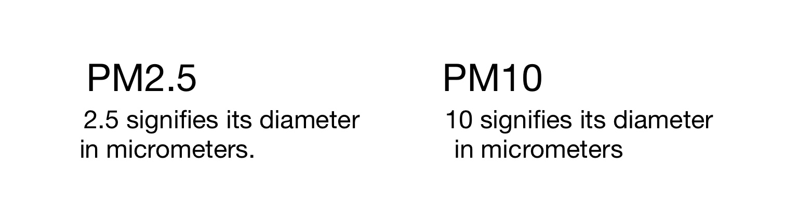

Definition: Particles found in the air; including dust, soot, dirt, smoke, and liquid droplets.
There are a dozen different sizes of PM, but the most popular ones are PM2.5 and PM10.

Particulate M can be emitted from construction sites, unpaved roads, fields, smokestacks or fires...
Most particles form in the atmosphere as a result of chemical reaction from pollutants emitted from power plants, industries and automobiles.
(sulfur dioxide and nitrogen oxides)